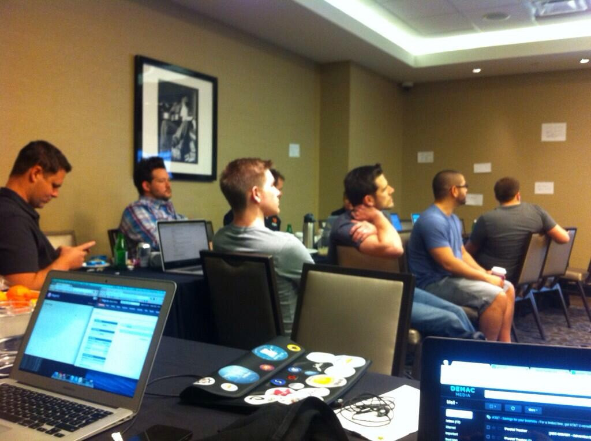
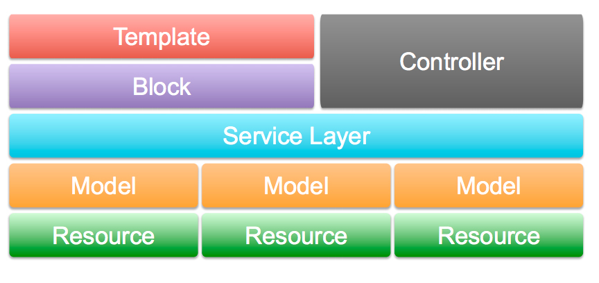

Magento Imagine Recap
New Magento Tools
Magento Developer Resources
By Luis Colon | @lfcolon62
Technical Lead, Senior Software Developer @ Alexander Interactive
What is Magento Imagine?
Magento's premier eCommerce event, Imagine brings together more than 1,700 merchants, partners, developers, digital industry experts and open source enthusiasts, from over 35 countries, for three days of networking, collaboration, cutting-edge sessions and, of course, imagination!
May 12th - 14th, 2014
Hard Rock Hotel & Casino Las Vegas
Magento Imagine
Tons of networking, meeting amazing people, events, presentations, demos, keynotes and parties.
Also … gambling, drinking, and going out at night - it is Las Vegas.Magento Certified Solutions Specialist
A Magento Solution Specialist is an expert user of the Magento ecommerce platform. Drawing on a deep background in business and ecommerce, the Magento Solution Specialist can efficiently align business objectives with Magento functionality, optimize use of native features, and avoid unnecessary customization. Whether as a merchant, a manager, a consultant, or an analyst, the Magento Solution Specialist knows how to make the best use of Magento technology.
http://www.magentocommerce.com/certification/solution-specialist
Magento Hackathon

Toss a bunch of developers in a room for 24 hours …
… and see what happens!
Big Brother
Magento module to monitor user activity - LIVE.
Built using Magento and node.js.
http://www.youtube.com/watch?v=Ors7QAIyqso
Fork on GitHub: https://github.com/danslo/BigBrother
Breakout Sessions
Fantastic talks on a variety of topics; all Magento centric.
You cannot attend them all, be sure to pick the ones that will benefit you the most.Magento 2 Front-end Development: New Features
Magento 2 introduces new tools and techniques to develop modern front-end experiences. The changes simplify and accelerate the theme development process as well as CSS integrity between themes and extensions.
Video: http://bit.ly/1lNx8X6
Magento 2 Front-end Development: New Features
- One folder to rule them all
- Themes now have parent/child relationships (fallback)
- HTML5, CSS3, LESS
- RequireJS integration and jQuery
- Mobile first responsive design
- Built with the new Magento UI library
Magento 2 Service Layer:
A Deep Dive into Customer Service
Magento UI and core business logic has been spread between models, helpers, and controllers; with the introduction of a service layer there is a clearer separation of concerns which will improve modularity. This session will also cover how a service can quickly be exposed as a web service via configuration. Attendees will benefit from a base understanding of how to write PHP code in Magento 2 introduced in earlier sessions.
PDF: http://bit.ly/TgyUF6
Video: http://bit.ly/1jf8yu8
Magento 2 Service Layer:
A Deep Dive into Customer Service

Blocks and controllers will communicate with the Service Layer instead of models directly
Magento 2 Service Layer:
A Deep Dive into Customer Service
Benefits on a service layer?
- Separation of presentation and business logic
- Easily create web API's via xml
- Service interface cuts down on available code.
75 methods on Customer Model, only 25 methods on Customer Service interface - Services are versioned! Backwards compatible
Responsive Evolution: Refining Priorities in Multi-Device Frontend Strategy
This session will talk about the refinement and evolution of a responsive frontend strategy for the things that matter today. This presentation highlights how changing thoughts and practices relating to frontend architecture have improved performance, user experience, and maintainability on multi-device responsive sites.
PDF: http://bit.ly/UHcLBf
Video: http://bit.ly/1nAErQD
Responsive Evolution:
Refining Priorities in Multi-Device Frontend Strategy
- More devices, more problems
- Multi-device users are the new normal
- Companies don't want to pay for desktop, mobile, and tablet specific sites anymore
- Are your systems, values, and goals fitted to the this environment?
- Future-friendly priorities
- A lot of good information, just watch this video!
Cool new magento tools
A turn-key solution that would automate the entire Magento development workflow from setting up web stacks to deploying code and migrating content between testing, staging and production environments.
Cool new magento tools

Created by WebShop Apps - configure your client's shipping logic from an easy to use SAAS.
Magento Developer Resources
- IDE? No Contest: PHP Storm http://www.jetbrains.com/phpstorm/
- Magicento PHP Storm plugin http://magicento.com/
- Commerce Bug by Alan Storm http://store.pulsestorm.net/products/commerce-bug-2
Magento Developer Resources
Save me internet!
- Magento Knowledge Base http://www.magentocommerce.com/knowledge-base
- Magento Stack Exchange http://www.magentocommerce.com/knowledge-base
- Magento Stack Overflow http://stackoverflow.com/questions/tagged/magento
- Alan Storm http://alanstorm.com/category/magento
- Inchoo http://inchoo.net/blog/
- Joshua Warren http://joshuawarren.com/
- MageBase http://magebase.com/
- MageDev http://magedev.com/
Magento Developer Resources
For the real nerds
- IRC #magento channel: http://irc.lc/freenode/%23magento/t4nk@@@
Magento Developer Certification Resources
Download the free study guides provided at the Magento website, then use these links to help prepare.
- http://magestudyguide.com/
- http://www.demacmedia.com/magento-commerce/magento-frontend-developer-certification-exam-study-guide-qa/
- http://blog.belvg.com/category/magento-news/developer-certification
- http://prattski.com/category/magento/
- http://devjunkyard.com/2013/magento-certification-basics-recap/
- Flash cards: http://quizlet.com/20443995/magento-certification-preparation-study-guide-answers-flash-cards/
Fin
Thanks!
Follow me on twitter: @lfcolon62
Email: lfc@alexanderinteractive.com